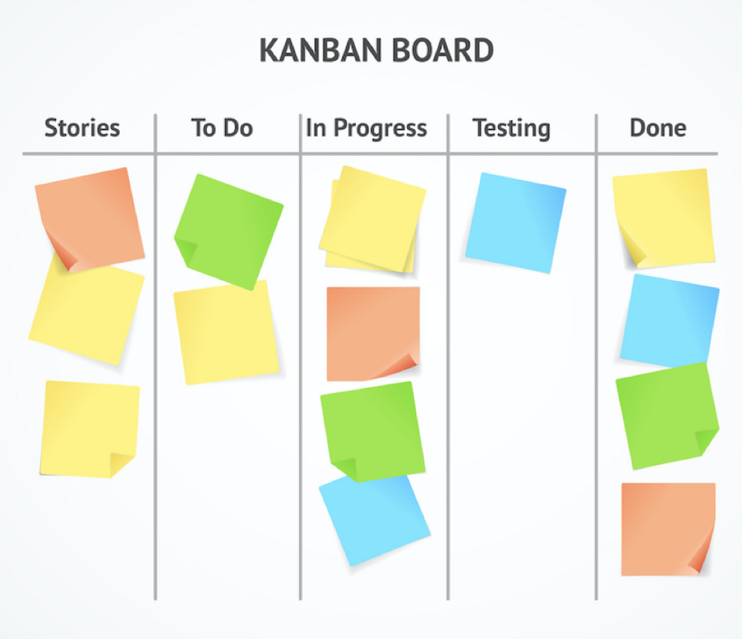

Kanban is a scheduling system for lean manufacturing and just-in-time manufacturing (JIT). Taiichi Ohno, an industrial engineer at Toyota, developed kanban to improve manufacturing efficiency. Kanban is one method to achieve JIT. The system takes its name from the cards that track production within a factory. Kanban is also known as the "Toyota nameplate system" in the automotive sector.

History
The system originates from the simplest visual stock replenishment signaling system, an empty box. This was first developed in the UK factories producing Spitfires during the Second World War, and was known as the “two bin system.” In the late 1940s, Toyota started studying supermarkets with the idea of applying shelf-stocking techniques to the factory floor. In a supermarket, customers generally retrieve what they need at the required time—no more, no less. Furthermore, the supermarket stocks only what it expects to sell in a given time, and customers take only what they need, because future supply is assured. This observation led Toyota to view a process as being a customer of one or more preceding processes and to view the preceding processes as a kind of store.
Kanban aligns inventory levels with actual consumption. A signal tells a supplier to produce and deliver a new shipment when a material is consumed. This signal is tracked through the replenishment cycle, bringing visibility to the supplier, consumer, and buyer.
Kanban uses the rate of demand to control the rate of production, passing demand from the end customer up through the chain of customer-store processes. In 1953, Toyota applied this logic in their main plant machine shop.